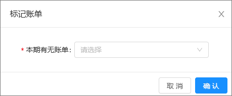

需求说明：支持维护总账会计邮箱；
1.列表新增【总账会计、总账会计邮箱】；
2.新增/修改按钮：新增维护【总账会计、总账会计邮箱】位于法人主体下方；文本框必录，逗号分割；其中总账会计限制100字符；邮箱限制500字符，校验是否为公司已存在邮箱；
3.导入参考新增按钮逻辑；总账会计和总账会计邮箱均必录；
4.筛选条件新增总账会计、总账邮箱，位于出纳左侧；格式同出纳和出纳邮箱；
总账会计 总账会计邮箱

需求说明：支持维护总账会计邮箱
需求1：列表清除账单时新增二次确认；
需求2：定时任务（生成账单数据）：将生成数据和提醒操作拆分为两个定时任务；生成数据时间及逻辑不变；
定时任务（提醒）：时间：每月6号上午9点及当月后续的每周一上午9点，筛选上月【账单状态】=’未上传‘且【本期有无账单】为’有‘的生成数据按【法人主体】匹配【账单管理/账单对接人】页签中的【出纳邮箱】，
筛选上月【签收人】为空的生成数据按【法人主体】匹配【账单管理/账单对接人】页签中的【总账会计邮箱】，
发送附件至企业微信；——原需求链接：https://codesign.qq.com/s/576366969052764 v6.7.4账单管理（账单详情）
企业微信提醒详见：https://doc.weixin.qq.com/sheet/e3_AdAAAQZZAPEnpsiK20gSiOVvSflhv?scode=AIAAhQcPAAksL0LsNFAdAAAQZZAPE&tab=BB08J2
签收人 签收时间
签收账单
需求3：账单支持总账会计签收并下载；
3.1列表新增【签收人】列；数据源：签收账单按钮；
3.2新增【签收账单】按钮：3.2.1点击按钮打开弹窗如右图；其中【期间】：日期框精确到月，必录默认展示上一自然月；
【法人主体】：下拉多选无默认值，选项同列表搜索框；
3.2.2确认后，校验操作人所选法人主体在【账单对接人】的对应总账会计邮箱是否均为操作人邮箱，
①若是，则将操作人名称及操作时间赋值至所选数据【签收人、签收时间】列；（已签收数据不做更新）
同时将所筛数据文件压缩并下载导出；（参考批量下载按钮）
②若否则签收失败并提示：存在属于其他总账会计签收的法人主体，请检查！
需求4：支持根据银行流水刷新本期有无账单列；
4.1原【标记账单】按钮调整为【标记有无账单】；
4.2按钮下拉新增【更新有无账单】按钮：二次确认，按列表期间筛选【账单状态】=‘未上传’的数据，将所选数据按【期间+法人主体+所属银行+银行账号+币别】维度校验在【银行流水】页面是否存在数据；若存在则该维度【本期有无账单】
字段值更新为‘有’；否则，为‘无’；

签收范围

*期间：
法人主体：


更新有无账单
标记有无账单